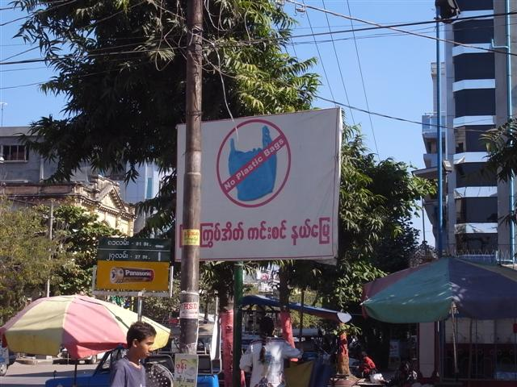

吃早餐的地方有電視觀看，當地的新聞節目，報導國際新聞都幾多，新加坡、巴基斯坦到埃及都有。
超悠閒，早上在 Mandalay Palace 旁行來行去，不知是因為時間太多，還是陽光太猛，行得很慢。Mandalay Palace 護城河畔有很多樹木，我躲在樹蔭，看見一些乞丐在拾垃圾，有一位老婆婆，連一個吃剩的蘋果也拾。這時我想起 Harri 說過，這裏的自然資源豐富得不得了，人們其實不用工作也有東西吃。但為什麼我又會見到這種情景？
午餐又在 Nepal Food 吃我喜愛的印度食品，最緊要是那杯 Masala Tea。在這裏遇上一位教師，是這裏少數的基督徒，和他談了很久，言談間感到他對政府的敢怒不敢言。
Mandalay 有好幾間戲院，《Skyline》上映中......不過戲院「保衛深嚴」，拍個照都喊打喊殺。
這裏大部分街道都是用數字順序為名，我沿著 86th Street 一直往南走，穿過超多人的市場，很多東西賣，其中一樣是像泥的東西，那些泥，用水混合成像顏料般，用來塗在臉上和手上。當地多數女人和小孩才會塗，也有少數男人塗，不過只會畫到像大花臉，否則會被人笑。這東西名叫 thanakha，有防曬功用。貪玩買了些來塗。
走著走著又到黃昏，去找古老的 Shwe In Bin Kyaung，但找不著，在一個池塘邊，看見很多僧人，有兩個僧人請我進入他們的 monastery，說是全世界最大的 monastery。全世界最大？真的要見識一下。Ma Soe Yein Nu Kyaung，比較像一個校園，有很多建築物，有男僧人和女僧人的宿舍，還竟然有座鐘樓。
兩位年輕僧人，帶我看完他們的校園，然後又帶我到 Shwe In Bin，一所木造百多年歷史的 monastery，滿地沙泥，今天不斷穿鞋脫鞋，穿涼鞋也不夠方便。
他們僧人每天學習八小時，而今天是 full moon，不用上課，所以出來走走，他們也會去網吧上網。道別後，天快全黑，好不容易才上到一部 trishaw（不是說生意難撈的嗎...），回去 ET Hotel。
約好昨晚的司機，去 Mandalay Marionettes。這司機很多話，自稱 Mr. To，說在 LP 中某頁的就是他（不過我找不到），又說別人常冒他的名，他才是正貨。曾經做電單車生意，但 2007 年的暴力鎮壓，即令緬甸旅遊一落千丈，持續了兩年的不景氣，To 先生變賣所有電單車，現在只擁有一部人力車。
他又說這裏貧富懸殊，沿路指著一些數層的建築物，說全幢都屬一個家庭，這些家庭，只會越來越大，越來越富。To 先生話題源源不絕，一時說這裏的供電是靠水力，所以旱季會停電，一時又說他的因果觀：我幫助了他，雖然他不會幫助我，但會有其他人幫助我。
我問他為何 Myanmar 以前叫 Burma 現在叫 Myanmar，他說因為這國家不只 Burmese 還有其他種族人，Myanmar 包括了各種在這裏生活的人，不過這題目好像很複雜，各有各說法。說起來，我申請公司信時填 Myanmar 但公司的人「懶醒」把它改回 Burma，幸好緬甸領事館的人還接受。
Mandalay Marionettes 表演的是木偶劇，劇場很細小，坐最前排也沒問題，牆上掛了許多木偶發售。現場音樂樂器和前晚的一樣，其中某一段劇竟和 Mintha Theatre 的一段是同一故事，不過是真人和木偶的分別。
這晚 ET Hotel 來了一班韓國義工，和孤兒院的孤兒玩遊戲，老闆說連 ET Hotel 這麼多房間也滿了。

thanakha
Ma Soe Yein Nu Kyaung
Shwe In Bin Kyaung

Saung (harp)